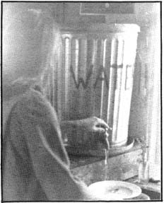

Issue # 9- May 1971
During the warm months we have a beautiful gravity-feed water system which sends clear brook water directly into our sink. When freezing weather sets in, however, we can't use the gravity system because the pipe is above ground and the water in it freezes.
Our first winter in Maine, we hauled water from the brook and stored it in a galvanized garbage can. Whenever we needed some, we dipped a receptacle into the can and scooped the water out. All that dipping didn't leave the remaining water any too clean and when unknowing friends used a pot fresh off the wood stove for a dipper . . . black soot would enter our water supply. Besides, doing dishes by this method left much to be desired.
We solved all these problems by installing a faucet near the bottom of our can and setting the can on our kitchen counter top with the spigot hanging over the sink.
If you want to try the idea, drill a hole (or punch one with a leather punch, as I did) in your can and force or screw the faucet into the hole. Use plenty of heat with a torch to burn the galvanizing off around the hole and solder for a tight fit. You may still have to haul water . . . but this rig can make your life in the country a bit easier.
|
 |
|
|